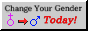
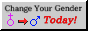
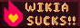
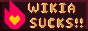

 



title 
hello!!! i'm kai, i use she/her pronouns and i'm a 12th grader going to uni next year to study mechanical engineering!
this page is meant as a cardd replacement while also being an excuse for me to learn html and css.
there's not much here... yet...
once i wrap up my final exams i'll try to actually learn html and also start doing stuff outside of just studying so stay tuned i suppose!
this page is meant as a cardd replacement while also being an excuse for me to learn html and css.
there's not much here... yet...
once i wrap up my final exams i'll try to actually learn html and also start doing stuff outside of just studying so stay tuned i suppose!
johnvertisement